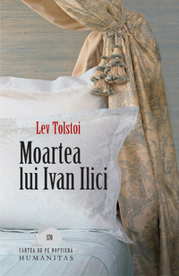
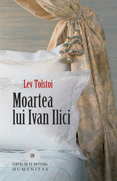

| Numele,autorul | Cartea | Site-ul de unde e procurată |
| "Alchimistul", Paulo Coelho | ||
| "Moartea lui Ivan Ilich", Lev Tolstoi |  | |
| "Dune", Frank Herbert |  |
|
| "Eu sunt Malala", Malala Yousafzay |
| Numele,autorul | Cartea | Site-ul de unde e procurată |
| "Alchimistul", Paulo Coelho | ||
| "Moartea lui Ivan Ilich", Lev Tolstoi |  | |
| "Dune", Frank Herbert | |
|
| "Eu sunt Malala", Malala Yousafzay |